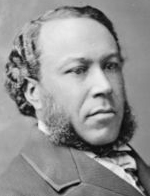

|

|

|
|
|
Four-term congressman and well-to-do barber, Joseph Hayne Rainey was born a slave
in Georgetown, South Carolina to Edward Rainey. As a child his family purchased
its freedom and moved to Charleston.
Forced to labor on Confederate fortifications in Charleston at the beginning
of the Civil War, Rainey fled to Bermuda with his wife, Susan, for the duration
of the War. In 1865, he returned to South Carolina and involved himself in
Republican Party politics. He represented Georgetown County at the state
constitutional convention of 1868. A year later, he was appointed census taker,
and later served as county agent for the state land commission and brigadier
general in the state militia. As a member of the state Senate, Rainey had a
generally conservative record. He rejected land confiscation for freedmen and
endorsed a poll tax. In 1870, he was elected to Congress, the first black
American to be seated in the U.S. House of Representatives.
Rainey was a member of the 41st-45th Congresses (1870-1879). In the House,
he was mostly known for his strident support of the Enforcement Acts,
legislation designed to protect blacks from violent attacks by groups such as
the Ku Klux Klan. Speaking on the issue of whether the Civil War amendments
necessitated the expansion of the powers of the federal government, Rainey said:
"I desire that so broad and liberal a construction be placed upon its
provisions as will insure the protection to the humblest citizen. Tell me
nothing of a constitution which fails to shelter beneath its rightful power the
people of a country."
Rainey was defeated for reelection in 1878. After leaving Congress, he was
appointed a U.S. Internal Revenue Agent, a position he held for two years. He
then moved to Washington, D.C. where he was involved in the banking and
brokerage business for several years. Rainey died in Georgetown, South
Carolina in 1887.
Source: Joan Waugh, ed., Facts on File Encyclopedia of American
History: Civil War and Reconstruction, 1856 to 1869 (New York: Facts on
File, 2003), 290-91.
|